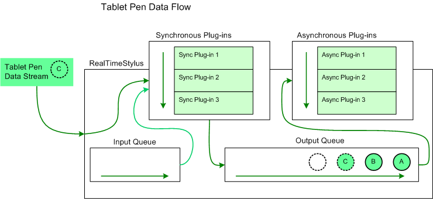

The RealTimeStylus class is part of the StylusInput application programming interfaces (APIs). The following sections describe key elements of the RealTimeStylus class and the StylusInput APIs.
When you create a RealTimeStylus object, you have the option of attaching it to a window handle or to a control. Attaching the RealTimeStylus object to a window handle requires additional permissions. For more information about these permissions, see Partial Trust Considerations for the StylusInput APIs.
[!Note]
You cannot attach the RealTimeStylus object to a window or control in a different process.
Â
If you use the default constructor, you create a RealTimeStylus object that can only accept input from another RealTimeStylus object. For more information about connecting two RealTimeStylus objects, see The Cascaded RealTimeStylus Model.
The RealTimeStylus object implements the IDisposable interface.
To allow your plug-ins to interact with the data stream from the tablet pen, the RealTimeStylus object maintains two plug-in collections, which are accessible by the GetStylusSyncPlugin and the GetStylusAsyncPlugin methods in C++ and by the SyncPluginCollection and AsyncPluginCollection properties in managed code. You can add a plug-in by calling either the AddStylusSyncPlugin or the AddStylusAsyncPlugin method of the collection within the appropriate property. For more information about creating and using plug-ins, see Plug-ins and the RealTimeStylus Class. For information about deciding whether to create a synchronous or asynchronous plug-in for a particular task, see Threading Considerations for the StylusInput APIs and Performance Considerations for the StylusInput APIs.
Synchronous plug-ins must implement the IStylusSyncPlugin interface, and asynchronous plug-ins must implement the IStylusAsyncPlugin interface. Each plug-in has a IStylusSyncPlugin.DataInterest or IStylusAsyncPlugin.DataInterest property. The RealTimeStylus object calls only the notification methods of the plug-in for methods in which the plug-in has subscribed. For more information about the notification methods, see Plug-in Data and the RealTimeStylus Class.
The RealTimeStylus object implements the IStylusAsyncPlugin interface. The only way to instantiate a RealTimeStylus object that accepts input from another RealTimeStylus object is to use the default constructor and implement the cascaded RealTimeStylus model. For more information about connecting two RealTimeStylus objects see The Cascaded RealTimeStylus Model.
The RealTimeStylus object has two internal queues that carry the tablet pen data, the input queue and the output queue. The pen data is converted into instances of the classes in the Microsoft.StylusInput.PluginData namespace. The following list describes how the RealTimeStylus object handles the tablet pen data.
The following diagram illustrates the flow of tablet pen data through the RealTimeStylus object and its plug-in collections.

In this diagram the circles lettered "A" and "B" represent tablet pen data that has already been added to the RealTimeStylus object's output queue and that has not yet been sent to the asynchronous plug-in collection. The circle lettered "C" represents the tablet pen data that the RealTimeStylus object is currently processing. It is sent to the synchronous plug-in collection and placed on the output queue. The empty circle represents the position in the output queue where future tablet pen data is added.
For more information about how specific data is added to the queue and processed, see Plug-in Data and the RealTimeStylus Class.
The following is a minimal scenario for using the RealTimeStylus object on a form that collects ink.
For a sample of such an application, see the RealTimeStylus Ink Collection Sample.
Each enabled RealTimeStylus object maintains a list of unique identifiers for the Tablet objects it can interact with. The RealTimeStylus object exposes two methods for translating between the unique identifier and the Tablet object: the GetTabletContextIdFromTablet and GetTabletFromTabletContextId methods.
The TabletPropertyDescription object (in managed code) contains a PacketPropertyId property and a TabletPropertyMetrics structure that describes the range, resolution, and units of the property for a specific Tablet object. The RealTimeStylus object's GetDesiredPacketDescription method returns an array of globally unique identifiers (GUIDs) for the packet properties that the RealTimeStylus object forwards to its plug-ins when those packet properties are available. To modify the set of packet properties the RealTimeStylus object passes to its plug-ins, call the RealTimeStylus object's SetDesiredPacketDescription method. The GetTabletPropertyDescriptionCollection method (in managed code) of the RealTimeStylus object takes a unique tablet identifier and returns a collection of TabletPropertyDescription objects. These packet properties represent the subset of properties supported by the tablet that are returned by the GetDesiredPacketDescription method.
For a list of the standard packet property GUIDs, see the PacketPropertyGuids Constants class.
The following list describes other points to take into consideration when using the RealTimeStylus object with a Tablet object.
The RealTimeStylus object passes information about the tablet pen to its plug-ins in a number of the notification methods. Information about the tablet pen is represented by a Stylus object, gotten through the GetStyluses method. This object is a representation of the tablet pen at the time the data was gathered. Because plug-ins receive the tablet pen data as part of the tablet pen data stream, the plug-ins should use the information in the Stylus object instead of checking for the current state of a particular tablet pen through the Cursor class. For information about how tablet pen and tablet pen button data is passed to plug-ins, see Plug-in Data and the RealTimeStylus Class.
To get an array of the Stylus objects that the RealTimeStylus object has encountered since it was last enabled, use the RealTimeStylus object's GetStyluses method.
Microsoft.StylusInput.RealTimeStylus
The Cascaded RealTimeStylus Model
Partial Trust Considerations for the StylusInput APIs
Plug-in Data and the RealTimeStylus Class
Threading Considerations for the StylusInput APIs
Â
Â